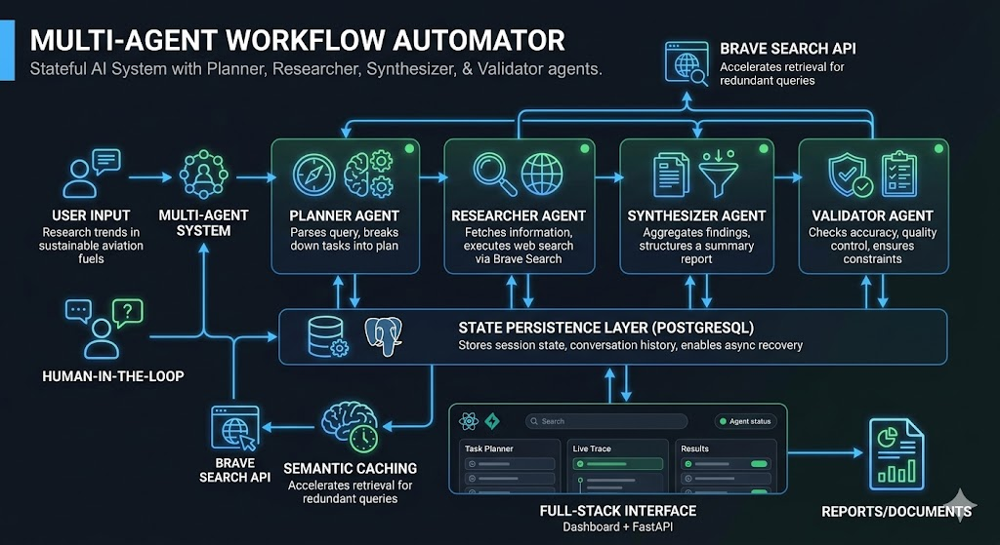

Multi-Agent Workflow Automator
Built a stateful multi-agent AI system with Planner, Researcher, Synthesizer, and Validator agents. Features human-in-the-loop clarification, web retrieval via Brave Search, and semantic caching. Developed a persistent state layer using PostgreSQL for async recovery, and built a full-stack React + FastAPI interface.